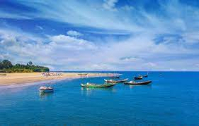
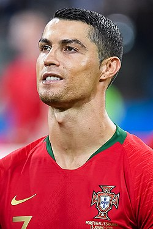

this is a party
It seems like this summer is full of nonstop football action, with the Premier League only having just concluded and the likes of Euro 2020, Copa America and the Olympics being played in full force. There will only be the briefest of pauses between international tournaments and the start of the Premier League, with the likes of English heavyweights Manchester City, Manchester United, Chelsea, Liverpool and Arsenal all eager for a shot at domestic glory. With the 2021-22 Premier League season due to begin in August, Goal has what you need to know about when the official fixture list will be announced.
ai jonno amaader uchit sobike nea valo vabe somaje bosobas kora Cristiano Ronaldo dos Santos Aveiro (born 5 February 1985), better known as Cristiano Ronaldo, or by his nickname 'CR7', is a Portuguese professional footballer who plays as a forward. He plays for Serie A club Juventus and is the captain of the Portuguese national team. He is considered to be one of the greatest footballers of all time, and, by some, as the greatest ever.[12][13][14][15][16][17] Ronaldo began his professional career with Sporting CP at age 17 in 2002, and signed for Manchester United a year later. He won the FA Cup in his first season, and then won three back-to-back Premier League titles: in 2006-07, 2007-08, and 2008-09. In 2007-08, Ronaldo helped United win the UEFA Champions League. In 2008-09, he won his first FIFA Club World Cup in December 2008, and he also won his first Ballon d'Or. At one point Ronaldo was the most expensive professional footballer of all time, after moving from Manchester United to Real Madrid for approximately £80 m in July 2009. He won his first trophy with Real Madrid in 2011, the 2010-11 Copa del Rey. In the next season, he won his first La Liga title with the club, the 2011-12 La Liga. In the 2012-13 season he won the Supercopa de España. In the next season, the 2013-14 season, he won his second Ballon d'Or. Then he won the Copa del Rey, and he also won his second Champions League with a record 17 goals. The following year, Ronaldo won the Ballon d'Or again, along with his second FIFA Club World Cup in December 2014. In 2016, Ronaldo won his third Champions League, and scored the winning penalty in the final against Atlético Madrid. He won his fourth Ballon d'or the next season, his second La Liga title for the first time in five years, another Champions League, and his second Club World Cup. Ronaldo's last season with Real Madrid was the 2017-18 season, where he won his fifth Ballon d'Or in 2017, and also won his fifth Champions League and scored two goals in the final against Juventus. With his third consecutive Champions League, he became the first player to win the UEFA Champions League five times.[18] He would later go on to transfer to Juventus in July 2018. Ronaldo left the club by holding the record for being the top goal scorer in Real Madrid's history, and remaining as the only player in La Liga's history to score 30 or more goals in six consecutive seasons. 